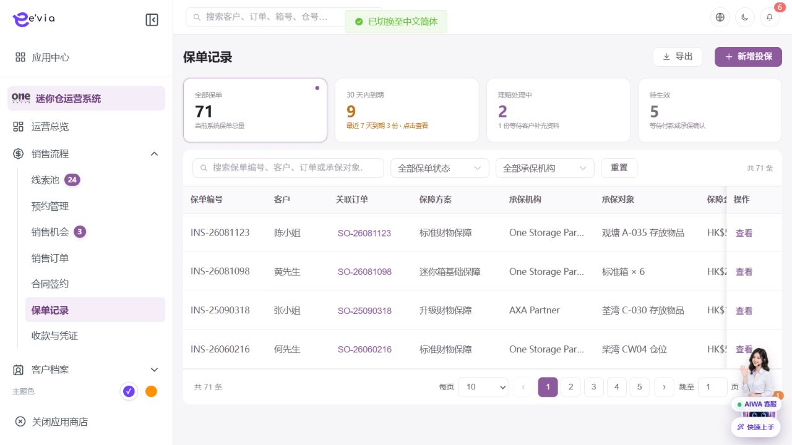

保单管理 PRD
下载 Word 文档保单管理 PRD
运营后台研发详细需求规格 · V2.2 · 2026-09-09
1 文档目标与范围
管理投保、承保、续保、理赔和保单文件，并与订单、合同和承保机构保持一致。 本文档明确页面字段、操作流程、业务规则、跨端契约、权限和验收条件。
| 属性 | 内容 |
|---|---|
| 文档编号 | OS-OPS-PRD-08 |
| 产品基线 | AiwaBot产品原型 V3.2 与 OneStorage运营后台原型 V1.1 |
| 版本 | V2.2 2026-09-09 |
1.1 原型界面依据
本模块界面直接取自 AiwaBot产品原型-v3.2.html。真实截图及功能点对应说明见“界面与功能对应说明”。
2 界面与页面结构
2.1 界面与功能对应说明
以下真实原型截图用于确定页面区域、入口和交互位置；字段校验、状态变化和服务端处理以本PRD功能规格为准。

| 说明项 | 界面辅助说明 |
|---|---|
| 对应功能点 | OS-OPS-PRD-08-FP01 新增投保；OS-OPS-PRD-08-FP02 提交承保；OS-OPS-PRD-08-FP03 查看或下载保单；OS-OPS-PRD-08-FP04 发起续保；OS-OPS-PRD-08-FP05 登记理赔 |
| 页面区域 | 保单管理列表与筛选由查询条件、结果列表、状态标识、行级操作和分页区组成。 |
| 交互要求 | 查询条件可组合、重置并在返回时保留；列表与导出共用同一数据范围；按钮依据权限、状态和allowedActions显示。 |
| 状态与权限 | 动作由allowedActions控制；无权限隐藏入口，接口仍执行403校验并记录审计。 |
2.3 筛选条件
| 筛选项 | 规则 |
|---|---|
| 保单编号、客户、订单或承保对象 | 支持组合查询、重置和返回保留。 |
| 承保机构 | 支持组合查询、重置和返回保留。 |
| 保单状态 | 支持组合查询、重置和返回保留。 |
| 理赔状态 | 支持组合查询、重置和返回保留。 |
| 到期日期 | 支持组合查询、重置和返回保留。 |
3 列表字段规格
>| 字段ID | 字段 | 来源 | 展示与交互规则 |
|---|---|---|---|
| OS-OPS-PRD-08-L01 | 保单编号 | 服务端主键或业务编号 | 完整展示并支持复制；唯一且不可使用展示名称代替。 |
| OS-OPS-PRD-08-L02 | 客户 | 服务端/关联主数据 | 显示客户名称和客户编号，可跳转客户档案。 |
| OS-OPS-PRD-08-L03 | 关联订单 | 服务端/关联主数据 | 显示订单编号并支持在有权限时跳转。 |
| OS-OPS-PRD-08-L04 | 保障方案 | 业务主域 | 详情与导出保持一致；空值显示—，不使用模拟值补齐。 |
| OS-OPS-PRD-08-L05 | 承保机构 | 业务主域 | 详情与导出保持一致；空值显示—，不使用模拟值补齐。 |
| OS-OPS-PRD-08-L06 | 承保对象 | 业务主域 | 详情与导出保持一致；空值显示—，不使用模拟值补齐。 |
| OS-OPS-PRD-08-L07 | 保障金额 | 财务或报价主域 | 显示币种和两位小数；不得用格式化字符串参与计算。 |
| OS-OPS-PRD-08-L08 | 保费 | 财务或报价主域 | 显示币种和两位小数；不得用格式化字符串参与计算。 |
| OS-OPS-PRD-08-L09 | 生效日期 | 服务端时间 | 按Asia/Hong_Kong显示；空值显示—，排序使用原始时间。 |
| OS-OPS-PRD-08-L10 | 到期日期 | 服务端时间 | 按Asia/Hong_Kong显示；空值显示—，排序使用原始时间。 |
| OS-OPS-PRD-08-L11 | 理赔状态 | 服务端枚举 | 以标签显示；筛选、导出和详情使用同一枚举文案。 |
| OS-OPS-PRD-08-L12 | 操作人 | 服务端/关联主数据 | 记录最近一次有效业务操作人员。 |
| OS-OPS-PRD-08-L13 | 更新时间 | 服务端/关联主数据 | 服务器更新时间，格式YYYY-MM-DD HH:mm:ss。 |
| OS-OPS-PRD-08-L14 | 保单状态 | 服务端枚举 | 以标签显示；筛选、导出和详情使用同一枚举文案。 |
| OS-OPS-PRD-08-L15 | 操作 | 服务端/关联主数据 | 根据allowedActions显示查看、编辑及状态动作；后端再次鉴权。 |
4 新增与编辑表单
| 字段ID | 字段 | 控件 | 必填 | 校验与保存规则 |
|---|---|---|---|---|
| OS-OPS-PRD-08-F01 | 客户或投保人 | 文本框 | 条件必填 | 去除首尾空格；保存原始值与标准化值。 |
| OS-OPS-PRD-08-F02 | 关联订单 | 文本框 | 条件必填 | 去除首尾空格；保存原始值与标准化值。 |
| OS-OPS-PRD-08-F03 | 关联合同 | 文本框 | 条件必填 | 去除首尾空格；保存原始值与标准化值。 |
| OS-OPS-PRD-08-F04 | 保障方案 | 文本框 | 条件必填 | 去除首尾空格；保存原始值与标准化值。 |
| OS-OPS-PRD-08-F05 | 保障金额 | 金额输入 | 条件必填 | 输入大于等于0，最多两位小数；服务端以最小货币单位重算。 |
| OS-OPS-PRD-08-F06 | 保费 | 金额输入 | 条件必填 | 输入大于等于0，最多两位小数；服务端以最小货币单位重算。 |
| OS-OPS-PRD-08-F07 | 生效日期 | 日期或日期时间 | 必填 | 服务端校验起止顺序、营业日和截止规则。 |
| OS-OPS-PRD-08-F08 | 到期日期 | 日期或日期时间 | 必填 | 服务端校验起止顺序、营业日和截止规则。 |
| OS-OPS-PRD-08-F09 | 承保对象 | 文本框 | 条件必填 | 去除首尾空格；保存原始值与标准化值。 |
| OS-OPS-PRD-08-F10 | 受益人 | 文本框 | 条件必填 | 去除首尾空格；保存原始值与标准化值。 |
| OS-OPS-PRD-08-F11 | 备注 | 多行文本 | 条件必填 | 最多500字；拒绝或异常原因不得只输入空白。 |
5 功能点详细设计
| 功能编号 | 功能点 | 目标 |
|---|---|---|
| OS-OPS-PRD-08-FP01 | 新增投保 | 从订单选择客户和承保对象，按产品规则计算保费。 |
| OS-OPS-PRD-08-FP02 | 提交承保 | 向第三方提交并保存请求、回执和交易编号。 |
| OS-OPS-PRD-08-FP03 | 查看或下载保单 | 校验文件哈希和权限，记录下载审计。 |
| OS-OPS-PRD-08-FP04 | 发起续保 | 复制可复用字段并重新计算新周期价格。 |
| OS-OPS-PRD-08-FP05 | 登记理赔 | 记录事故、材料、金额和第三方状态。 |
5.1 新增投保
功能编号：OS-OPS-PRD-08-FP01
功能目的：从订单选择客户和承保对象，按产品规则计算保费。
使用角色与入口：具备本模块创建权限的运营人员；从模块列表右上角新增入口或关联对象快捷入口进入。入口显示前校验菜单、动作和数据范围。
前置条件：用户登录有效并具备创建或批量权限；关联主数据有效且属于dataScope；页面已加载最新字典、业务配置和allowedActions。
界面操作：打开新增界面，按页面分组录入客户或投保人、关联订单、关联合同、保障方案、保障金额、保费、生效日期、到期日期、承保对象、受益人、备注、保单编号；关联对象使用检索选择。点击保存前完成字段级和跨字段校验。
系统处理：服务端使用clientRequestId幂等校验，在事务内生成业务编号、主对象、初始状态和审计记录；事务提交后发布领域事件。从订单选择客户和承保对象，按产品规则计算保费。
业务规则：承保对象必须属于关联订单；保费以承保机构确认值为准。服务端必须重复校验。
成功结果：页面提示“新增投保成功”，刷新对象状态、version、allowedActions、关联对象和时间线；如产生异步任务，同时显示任务编号和进度入口。
异常与恢复：400保留输入；403拒绝并审计；409要求刷新；超时按clientRequestId查询；部分成功显示明细和补偿入口。
跨端影响：客户小程序展示本人保单摘要、文件和理赔进度；接收端打开后重新鉴权并回源。
验收条件：在允许状态下完成新增投保时仅产生一次预期数据变化和一次审计记录；越权、错误状态、重复提交及版本冲突均不得产生重复对象或越级状态。
5.2 提交承保
功能编号：OS-OPS-PRD-08-FP02
功能目的：向第三方提交并保存请求、回执和交易编号。
使用角色与入口：当前对象负责人、被分派执行人或获授权管理员；从列表行操作、详情页主操作区或待办入口进入。入口显示前校验菜单、动作和数据范围。
前置条件：用户登录有效；目标对象存在且属于用户dataScope；当前状态包含该动作；页面持有最新version和allowedActions。涉及金额、库存、附件或第三方结果时必须回源确认。
界面操作：在详情页执行提交承保，填写或核对客户或投保人、关联订单、保障金额、生效日期、到期日期、备注、保单编号、客户、理赔状态、更新时间；界面随步骤显示当前节点、下一步和可撤回条件。
系统处理：服务端调用POST /ops/v1/policies/{id}/actions/{action}，校验权限、当前状态、expectedVersion和业务不变量，在事务中写入状态及时间线。向第三方提交并保存请求、回执和交易编号。
业务规则：承保对象必须属于关联订单；保费以承保机构确认值为准。服务端必须重复校验。
成功结果：页面提示“提交承保成功”，刷新对象状态、version、allowedActions、关联对象和时间线；如产生异步任务，同时显示任务编号和进度入口。
异常与恢复：400保留输入；403拒绝并审计；409要求刷新；超时按clientRequestId查询；部分成功显示明细和补偿入口。
跨端影响：承保或理赔状态变化发送通知；接收端打开后重新鉴权并回源。
验收条件：在允许状态下完成提交承保时仅产生一次预期数据变化和一次审计记录；越权、错误状态、重复提交及版本冲突均不得产生重复对象或越级状态。
5.3 查看或下载保单
功能编号：OS-OPS-PRD-08-FP03
功能目的：校验文件哈希和权限，记录下载审计。
使用角色与入口：具备导出或报告权限的用户；从列表工具栏或报告生成入口进入。入口显示前校验菜单、动作和数据范围。
前置条件：用户具备导出或报告权限，当前查询已完成且筛选合法；导出列不得超出字段权限，任务配额未超限。
界面操作：沿用当前筛选与列权限，选择导出范围或报告格式；任务进入进度中心，完成后提供限时下载。
系统处理：服务端冻结查询条件和dataScope并创建异步任务；逐条校验权限、版本和状态，返回成功、失败及原因明细。校验文件哈希和权限，记录下载审计。
业务规则：历史保单和条款版本不可覆盖。服务端必须重复校验。
成功结果：界面创建查看或下载保单任务并显示任务编号、生成进度、有效期和下载入口；下载内容与任务冻结的筛选及列权限一致。
异常与恢复：400保留输入；403拒绝并审计；409要求刷新；超时按clientRequestId查询；部分成功显示明细和补偿入口。
跨端影响：订单退租或取消触发退保资格检查但不得自动退保；接收端打开后重新鉴权并回源。
验收条件：相同筛选和字段权限生成的查看或下载保单数据量与列表一致；重复提交复用幂等结果，越权字段不进入文件。
5.4 发起续保
功能编号：OS-OPS-PRD-08-FP04
功能目的：复制可复用字段并重新计算新周期价格。
使用角色与入口：具备本模块创建权限的运营人员；从模块列表右上角新增入口或关联对象快捷入口进入。入口显示前校验菜单、动作和数据范围。
前置条件：用户登录有效并具备创建或批量权限；关联主数据有效且属于dataScope；页面已加载最新字典、业务配置和allowedActions。
界面操作：打开新增界面，按页面分组录入客户或投保人、关联订单、关联合同、保障方案、保障金额、保费、生效日期、到期日期、承保对象、受益人、备注、保单编号；关联对象使用检索选择。点击保存前完成字段级和跨字段校验。
系统处理：服务端使用clientRequestId幂等校验，在事务内生成业务编号、主对象、初始状态和审计记录；事务提交后发布领域事件。复制可复用字段并重新计算新周期价格。
业务规则：承保对象必须属于关联订单；保费以承保机构确认值为准。服务端必须重复校验。
成功结果：页面提示“发起续保成功”，刷新对象状态、version、allowedActions、关联对象和时间线；如产生异步任务，同时显示任务编号和进度入口。
异常与恢复：400保留输入；403拒绝并审计；409要求刷新；超时按clientRequestId查询；部分成功显示明细和补偿入口。
跨端影响：客户小程序展示本人保单摘要、文件和理赔进度；接收端打开后重新鉴权并回源。
验收条件：在允许状态下完成发起续保时仅产生一次预期数据变化和一次审计记录；越权、错误状态、重复提交及版本冲突均不得产生重复对象或越级状态。
5.5 登记理赔
功能编号：OS-OPS-PRD-08-FP05
功能目的：记录事故、材料、金额和第三方状态。
使用角色与入口：当前对象负责人、被分派执行人或获授权管理员；从列表行操作、详情页主操作区或待办入口进入。入口显示前校验菜单、动作和数据范围。
前置条件：用户登录有效；目标对象存在且属于用户dataScope；当前状态包含该动作；页面持有最新version和allowedActions。涉及金额、库存、附件或第三方结果时必须回源确认。
界面操作：在详情页执行登记理赔，填写或核对客户或投保人、关联订单、保障金额、生效日期、到期日期、备注、保单编号、客户、理赔状态、更新时间；界面随步骤显示当前节点、下一步和可撤回条件。
系统处理：服务端调用POST /ops/v1/policies/{id}/actions/{action}，校验权限、当前状态、expectedVersion和业务不变量，在事务中写入状态及时间线。记录事故、材料、金额和第三方状态。
业务规则：承保对象必须属于关联订单；保费以承保机构确认值为准。服务端必须重复校验。
成功结果：页面提示“登记理赔成功”，刷新对象状态、version、allowedActions、关联对象和时间线；如产生异步任务，同时显示任务编号和进度入口。
异常与恢复：400保留输入；403拒绝并审计；409要求刷新；超时按clientRequestId查询；部分成功显示明细和补偿入口。
跨端影响：承保或理赔状态变化发送通知；接收端打开后重新鉴权并回源。
验收条件：在允许状态下完成登记理赔时仅产生一次预期数据变化和一次审计记录；越权、错误状态、重复提交及版本冲突均不得产生重复对象或越级状态。
6 状态机与业务规则
| 对象 | 状态流转 |
|---|---|
| 保单管理 | 待提交→承保中→已承保→保障中→已到期/已退保；理赔：未申请→审核中→已赔付/已拒绝 |
| 异步任务 | 待执行→执行中→成功/失败→重试/人工处理 |
| 规则ID | 业务规则 |
|---|---|
| OS-OPS-PRD-08-R01 | 承保对象必须属于关联订单 |
| OS-OPS-PRD-08-R02 | 保费以承保机构确认值为准 |
| OS-OPS-PRD-08-R03 | 第三方回调幂等且签名必验 |
| OS-OPS-PRD-08-R04 | 退保或订单取消按保险规则计算退款 |
| OS-OPS-PRD-08-R05 | 历史保单和条款版本不可覆盖 |
| OS-OPS-PRD-08-R06 | 所有写请求携带clientRequestId和expectedVersion，重复请求返回首次结果 |
| OS-OPS-PRD-08-R07 | 服务端返回allowedActions，前端仅据此展示按钮，后端仍逐动作鉴权 |
| OS-OPS-PRD-08-R08 | 列表、详情、关联选择器、统计和导出使用同一数据范围 |
| OS-OPS-PRD-08-R09 | 创建、编辑、状态流转、导出、下载和审批均记录操作审计 |
| OS-OPS-PRD-08-R10 | 第三方调用失败不得伪装主业务成功，进入可重试或人工处理状态 |
7 业务处理链路
配置和治理操作使用审批、发布和版本管理
下游状态变化通过领域事件处理
批量和异步任务提供状态与失败明细
8 跨端交互规则
| 规则ID | 交互规则 |
|---|---|
| OS-OPS-PRD-08-X01 | 客户小程序展示本人保单摘要、文件和理赔进度 |
| OS-OPS-PRD-08-X02 | 承保或理赔状态变化发送通知 |
| OS-OPS-PRD-08-X03 | 订单退租或取消触发退保资格检查但不得自动退保 |
客户小程序仅访问本人数据，工单小程序仅访问本人或团队任务
深链打开后重新校验身份、权限和最新状态
金额、库存、状态和allowedActions必须回源
离线重试沿用同一clientRequestId
9 接口与事件契约
| 契约 | 路径或事件 | 要求 |
|---|---|---|
| 列表 | GET /ops/v1/policies | 分页、排序、筛选、数据范围和脱敏 |
| 详情 | GET /ops/v1/policies/{id} | version、关联对象、时间线和allowedActions |
| 新增 | POST /ops/v1/policies | clientRequestId幂等 |
| 编辑 | PATCH /ops/v1/policies/{id} | expectedVersion并发控制 |
| 动作 | POST /ops/v1/policies/{id}/actions/{action} | 动作级权限和状态前置 |
| 事件 | 保单管理.Changed.v1 | eventId、aggregateId、version和occurredAt |
10 异常与边界处理
| 场景 | 处理 |
|---|---|
| 400字段错误 | 字段级提示并保留输入 |
| 403无权限 | 拒绝并记录审计 |
| 404不存在 | 不泄露额外对象信息 |
| 409版本冲突 | 刷新后重新操作 |
| 重复请求 | 返回首次幂等结果 |
| 第三方失败 | 进入重试或人工处理 |
11 验收标准
| 验收ID | 验收条件 |
|---|---|
| OS-OPS-PRD-08-AC01 | 列表字段、筛选、分页、排序和导出一致 |
| OS-OPS-PRD-08-AC02 | 表单字段、必填和跨字段校验完整 |
| OS-OPS-PRD-08-AC03 | 所有动作同时校验权限、数据范围和状态 |
| OS-OPS-PRD-08-AC04 | 重复请求无重复记录或副作用 |
| OS-OPS-PRD-08-AC05 | 跨端编号、状态、金额和时间一致 |
| OS-OPS-PRD-08-AC06 | 异常和空数据有明确反馈 |
| OS-OPS-PRD-08-AC07 | 敏感字段按权限脱敏并审计 |
| OS-OPS-PRD-08-AC08 | P0规则具有自动化测试 |